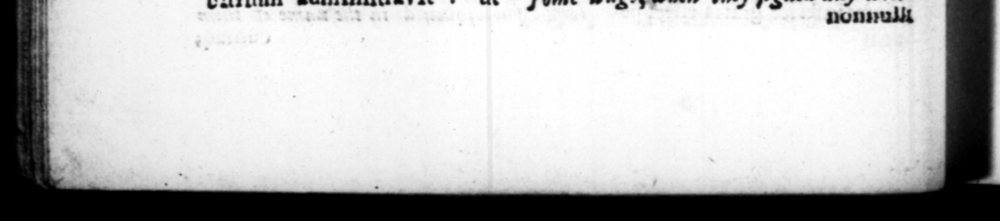

29 cuniaq; pollerer, nummos de ſo communi nomine per centurias pronuntiaret. Qna cognita re optimates, quos metus ceperat, nihil non anſurum eum in ſummo magiſtratu, concordi & comſentiente collega, auctores Bibulo fuerunt tantumdem pollicendi: ac plerique pecunias oontulerunt, ne Carone quidem almeunte eam largitionem e Rep. fieri. Igitur cum Bibulso conſut creatus ett. Eandem ob cauſſam opera optimatibus data eſt ut provinciz futur ĩs coſſ. minimi negotii, id eſt, ſilvæ calleſque, decerneren tim. Qua maxime inmria inſtinctus, omnitns officits Cn. Pompejum aſſectatus eſt, oftenſum patribus, quod Mithridate rege vitto, cunttanrins confirmatenrur acta ſua : Pompejoque M. Craſlum reconeiliavit, vererem inimicum ex conſnhlatu, quem ſumma diſcordia ſimul C. SUR T. TRA NO. bot / iſe the burzeſſes money. . which the — of Ig 3 he would at all in that high office, with a colleague of his ewn 5. adviſed Bibulus to promiſe as , and moſt of them contributed to raiſe the money; Cato himſelf acknowledging that bribery u ſuch an occaſion was for the publick good. Accordingly be was made conſul with Bibulus. For © the ſame reaſon the noble party took care to aſſizn provinces of ſmall importance to on fr conſuls , 40 as the care of woods and roads. At which bei _ hizhly incenjed, be endeavoured 5 all imaginable civilities to gain Pumpey, who was at that time out of humour with the ſenate, for the backwardneſs they ſhewed t — his Act, after the cnque3t of Mithridates. He — r-concited M. Craſſus to Pompey; had been Ins enemy from the time 4 their being conſuls trgetber, in whic office they were continually claſhing, and entered into an agreement with both, that ' mthing ſhould be trenſ.tted w the government, that was diſpleaſing to any one of the three. | zeſſeranr : ac ſocietatem cum mroque iniir, ne quid ageretur in Rep. quod diſplicuiſſet ulli e tribus. 20. Inito honore, primus omnium infſticuic ut tem ſenatus quam popnli qdinena acta conficerentur, & publicarentur, Antiquum etiam retulit morem, ut quo menſe faſves non haherer, accenſus ante eum iret, lictores pone ſequerentur. Lege autem agraria promulgata, obnunt iantem collegam armis foro expulit. Ac poſtero die in ſenatu conqueſtum, nec quam reperto qui ſuper tali ' confternatione referre, aut cenſere aliquid auderet, quatia multa ſæpe in leviortbus turhis decreta erant, in eam coit deſperationem, ut quoad eftare abirer, Como alvitus nihil aliud quam per edicta 'obnunrtiarer. Unus ex eo tempore omnia in rep. & ad arburium adminiſtravit : ur 20. After be was entered his office, be 0. the atts of 33 and pe-fle too, to be daily committed towritins and publiſhed, which had never been dons before and revived an ofd cullym, of having an accenſas walk before him, and hs licters follow him, every other manth that he had not the aſces, Upon his preferring a bill to the —— Pa yan 4 N04. of ome publick lands, be was oppoſed by his colleag ue, but drove him out forum. This he complained of day after in the ſenate, but no body having the courage to move er ad ſe the houſe upon ſuch a confiernation, which yet bad been of ten dine upon leſſer diſturbances, be was ſo diſcur aged, that "till be quitted his office, he kept (I. at home, and only endeavoured to obſirut proceedings by h's proclamations. From that time therefore Ceſar had the 2 management all affairs in his hands, inſomuch that ſome ways, when they ſigned a „ „ r n S: 1 oc we I. 1 _ We 99 ens FRF r
